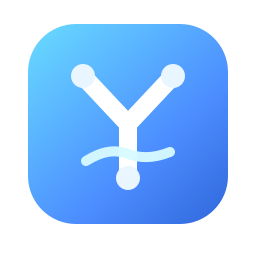
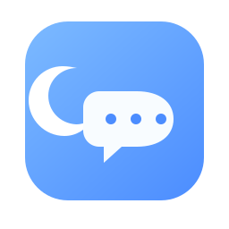

A / Lunar Stream
The strongest balance of brand and product. The crescent gives Yuex its identity, while the wave and nodes hint at message flow and multi-account links.
This round is tighter and more product-like: fewer shapes, stronger silhouette, and better small-size recognition for desktop app icons.
The strongest balance of brand and product. The crescent gives Yuex its identity, while the wave and nodes hint at message flow and multi-account links.

More technical and framework-like. The Y-shaped structure feels neat and modern, with a stronger tooling-platform tone.

Warmer and more conversational. The speech bubble reads clearly at a glance, but it is less distinct as a technical framework mark.